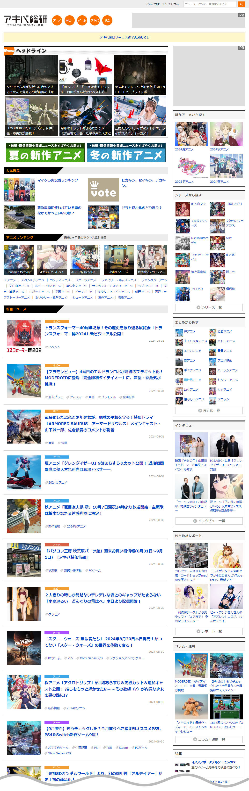
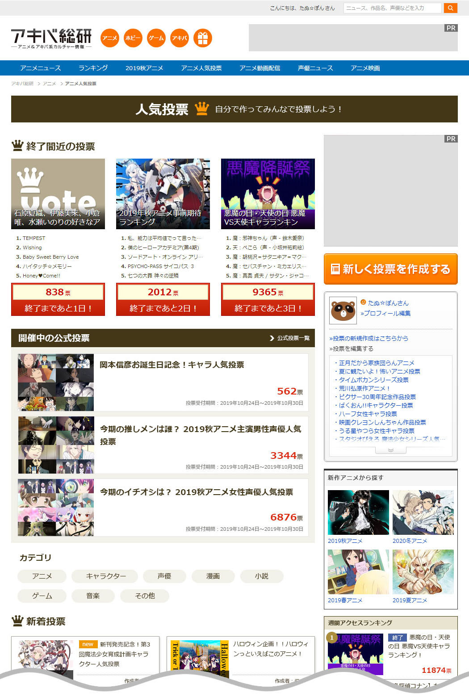
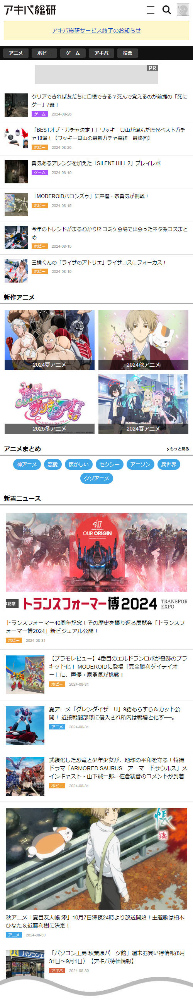

{kind=link}

{kind=link}

{kind=link}
『アキバ総研』は、秋葉原のショップを取材するPCパーツ関連情報サイトとして2002年8月に開設。秋葉原が「パソコン・家電の街」から「アニメ・コミックの街」へと変遷を遂げたのに合わせて、アニメやホビー、コスプレといった新ジャンルを追加して拡大し、専任記者が実際に取材して得た情報を15年にわたってほぼ毎日更新し提供。また2017年には初のリアルイベントを秋葉原ラジオ会館で開催しました。
月間PV575万、会員数5万（2023年時点）。2024年9月にてサービス終了。
担当
Webディレクション / フロントエンドデザイン / UI・UXデザイン / コーディング / コンテンツ企画・運用 / SEO施策
デザイン / コーディング / ワイヤーフレーム / プロトタイプ
社内管理画面を含む全ページの制作を担当（記事を入稿する編集管理画面を除く）
企画・運用
ユーザーエンゲージメント企画（投票コンテンツやユーザーレビューコンテンツ）や集客コンテンツの運用（季節アニメなどの定期更新）
仕様策定 / 要件定義
マイページやDBを利用したコンテンツ、社内管理画面の仕様策定および要件定義
その他
専門チームとの連携SEO施策、タイアップ・キャンペーンLP制作、アフィリエイトによる収益化施策など
プロジェクト履歴
| プロジェクト | 担当業務 | |
|---|---|---|
| 2011 | サイトリニューアル / 機能開発 | サイトリニューアルに伴うフロントエンドコーディング。マイページおよびレビュー投稿画面の要件策定〜UIデザイン〜実装。 |
| 2014 | スマホ最適化プロジェクト | アニメコンテンツのスマートフォン版リリースにおける仕様策定。ロゴ・サービスキャラクターの作成。スマホ特化型UIデザインおよびコーディング。 |
| 2015 | ユーザーエンゲージメント企画 | 新規「投票コンテンツ」の仕様策定、フロントエンドおよびUIデザイン、コーディング。 |
| 2017 | スマホサイト大規模リニューアル / リアルイベント | スマホサイトのリニューアル（仕様策定〜デザイン〜実装）。リアルイベント開催に伴う販促物（LP、ポスター等）の制作。 |
| 2018 | 新カテゴリ（ゲーム）拡張 | ゲームカテゴリ新規追加に伴うDB構成案および管理画面の仕様策定。 |
| 2019 | コンテンツ機能改修 | 投票コンテンツのUI/UX改善および機能改修。 |
| 通期 | SEO施策 / コンテンツマーケティング | SEO最適化を狙った「季節別新作アニメ一覧」の定常更新。検索流入を獲得するキーワード特化型「アニメまとめLP」の企画・運用。 |
所感
2011年のフルリニューアル時より参加し、制作業務すべてを担っていたため企画側の担当と分業する形でツーマンセルのディレクションを行っていました。
Web制作歴で一番長く携わったプロジェクトです。自社メディアではありますがWebマスターとしてリニューアルからサービス終了までほぼすべてに関わることができ、サイト運営の様々な知見を得ることができました。
SEO施策としては、通期で季節アニメやキーワード毎にまとめたアニメ一覧を手動で更新していましたが、この施策により検索順位を圏外から1～2位まであげることに成功しました。
さらにSEOなどで集めたユーザーを定着させるため、ユーザーが自ら投票を作れるコンテンツを改修しアクティブ会員アップにも貢献しています。
サイトで保有しているアニメやゲーム、声優などのDBをユーザーにどのように提供できるかを考え仕様に落とし込む作業が一番楽しかったです。
また、作ったサービスを収益化するプロセスは大変難しいものでしたがとてもやりがいがありました。
関連記事
- カカクコム、秋葉原情報サイト『アキバ総研』を大幅リニューアル（2011年9月13日）
- 『アキバ総研』、PCパーツの「リアルタイムコミュニティ機能」を提供開始（2011年12月13日）
- 秋葉原の情報サイト『アキバ総研』、「アキバ系カルチャー全般の情報＆コミュニティサイト」へと大幅リニューアル ～サイト開設10周年を記念したプレゼントキャンペーンも実施～（2012年9月13日）
- 秋葉原の情報＆コミュニティサイト「アキバ総研」、スマートフォン専用サイトを開設（2013年9月19日）
- アキバ総研、スマートフォン向けアニメポータル「あにぽた」を開設（2014年3月27日）
- アニメの情報ポータル「あにぽた」、アニメ人気投票機能をリリース（2015年9月7日）
- 「アキバ総研」15周年！初のリアルイベントを開催（2017年11月10日）
- 「アキバ総研」終了へ 22年の歴史に幕 記事は閲覧不能に（2024年8月1日）
※2024年9月にサービスが終了してしまっているため、当時のプレスリリース用のスクリーンショットのみとなります。